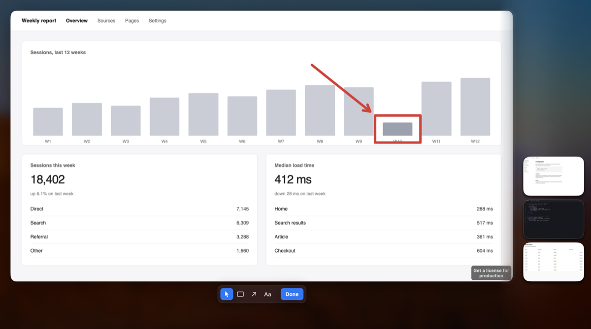

vignette
Vignette is a macOS menu bar app for what happens after the screenshot: Cmd+Shift+3, 4 and 5 still take it, and Vignette copies it, keeps the recent ones in a stack in the corner of the screen, and opens any of them in an editor to draw on.

- The stack. A shortcut puts your recent screenshots in the corner of the screen, over whatever you are working in. It takes the keyboard without taking your app's focus: arrows move, Space selects, Return opens, and the focus follows the mouse, so a key acts on the card you are pointing at. Drag a card out to drop it as a file on a chat window, Finder, or a terminal.
- Draw and copy. Return opens a screenshot in an editor sized to the image: rectangle, arrow, text. A mark is drawn in red unless red is what it sits on: the editor measures the pixels under each mark and moves to a colour that stands out from them. Done copies the result and sends the card back to the stack.
- Stitch. Select several cards and Cmd+S joins them into one image with numbered badges, saved next to the originals and copied. Two or three stack; more go in a grid, because a very tall image loses more of itself when a model resizes it to read.
- A queue. Open several cards at once and they come one after another, in the order you picked them. Each Done sends that one home and opens the next. They stay selected, so Cmd+C or Cmd+S afterwards still takes all of them.
- Zoom. Pinch, Cmd+scroll, or Cmd+plus magnifies the image you are drawing on, and Cmd+0 fits it again; a two-finger double tap zooms in on the point you are over. The window grows into the room it has first, and the stack narrows to make way for it rather than being covered.
- Drawings that survive a relaunch. Leave a drawing with Esc and it is kept on disk, not in the editor's memory. The card shows it, Copy Drawing renders it without opening the editor, and it is still there after a restart.
- A skill for coding agents. Turn it on and Vignette copies a skill into
~/.claudeand~/.codexthat teaches a coding agent its URL commands. The agent hands you an image withadd, draws its own marks on it withmarks=, and reads back what you drew; the card carries a badge naming which agent pushed it.
Download Vignette — not released yet.
Vignette on GitHub — source, MIT licensed. Build it yourself until the download is ready.